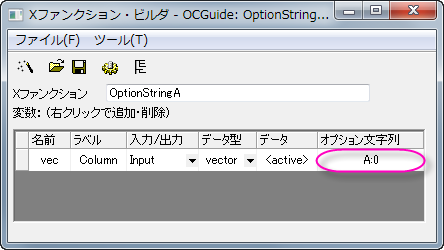
OptionStringA -d;と実行します。開いたダイアログには再計算コンボボックスが表示されません。 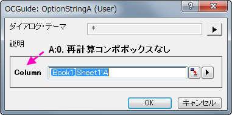
再計算オプションを使用すると、Xファンクションの再計算モードを制御できます。デフォルトでは、Xファンクションが、入力または出力変数として、XYRange、XYZRange、vector、Column、matrix、MatrixObjectといったOriginオブジェクトタイプを含むとき、手動、自動、なしを再計算モードとして使用できます（デフォルトのモードは手動）。変数が入力変数と出力変数の両方として使用されている場合、再計算モードは禁止され、再計算コンボボックスは非表示になることに注意してください。
Xファンクションダイアログで再計算コンボボックスを非表示にします。
例

OptionStringA -d;と実行します。開いたダイアログには再計算コンボボックスが表示されません。 
デフォルトの再計算モードをなしに設定します。このモードは入力変数と出力変数の両方で使用できます。
例
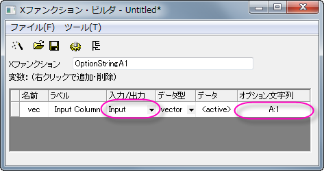
OptionStringA1 -d;と実行します。開いたダイアログでは、再計算コンボボックスでなしが選択されています。 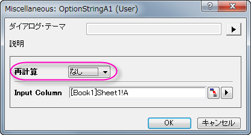
再計算モードで出力列のソートを許可します。出力変数に対してのみ機能します。
例
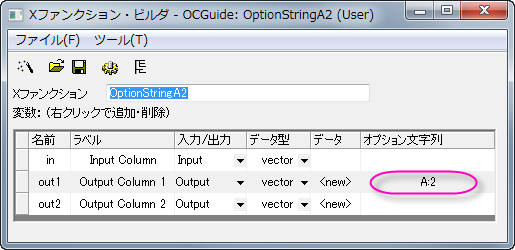
OptionStringA2 -d; を使用してXファンクションを実行します。OKボタンをクリックすると、以下のように鍵アイコン付きの2つの空の出力列が表示されます。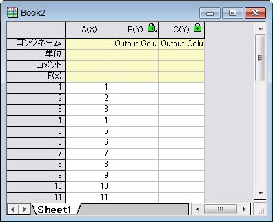
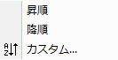
再計算モードを許可しますが、再計算コンボボックスはXファンクションダイアログで非表示になります。
ブラウザダイアログオプションは、Xファンクションダイアログ内のボタンで開くページ/グラフブラウザダイアログの設定を制御します。また、開いているダイアログをフィルタリングするためにも使用できます。Xファンクショングラフブラウザダイアログの例を参照してください。
ダイアログが開くとページ/グラフブラウザ内のすべてのページをソートします。
グラフブラウザから3Dグラフを除外します。
複合範囲の列指定の割り当てを無効にします。例えば、XYRange型の出力変数を取ります。 このオプション文字列が変数に指定されていない場合、出力列は2つあり、1つはX、もう1つはYです。そうでない場合、2つの列は両方ともデフォルトのY属性を持ちます。
非表示状態の新しいページを作成します。
Xファンクションを元に戻せないようにします。
デフォルトでは、double型の変数に値がない場合、この変数は何も表示しません（空のセルとなります）。このオプション文字列は、この種類の空の変数を"--"として表示するために使用されます。
このオプション文字列はRange型の出力変数に対してのみ使用できます。出力変数が<new>に設定されている場合、有効なOrigin C Rangeオブジェクトが作成されますが、新しい列は作成されません。このオプション文字列は、ユーザがXファンクション本体内の出力範囲オブジェクトの行と列を準備するのを助けます。
このオプション文字列はRange型の出力変数に対してのみ使用できます。出力変数が<new>に設定されている場合、入力範囲を同じ列数と行数で複製します。
MarkerInfoとButtonInfo XVariableに適用できます。設定すると非表示になります。
出力XVariableに適用できます。設定されている場合、書き込み可能チェックは抑制されます。
任意のXVariableに適用できます。設定されている場合は、ダイアログからのスクリプトを生成を常にサポートします。
バージョン9.0から利用可能です。Output Page/Layer XVariableに適用できます。設定されている場合、別のXVariableの値をチェックし、"hide" を呼び出して、新しく作成されたページを非表示にするかどうかを決定します。
バージョン9.0から利用可能です。グループ開始であるXVariable (オプション文字列Gを使用) に適用できます。設定すると、現在のXVariableが非表示の場合でもブランチ全体が非表示になりません。
E:V
XファンクションウィザードとXファンクションバーで変数の真の値を保持するために使用されます。最初の適用ボタンによって作成された先は、その後の適用ボタンによって使用されます。
F:*6*
double型の数値を表示するためのフォーマット文字列を提供します。*（Originグローバル数値フォーマット設定）や、.2（10進数2桁）など、標準的なLabTalk数値形式表記を使用できます。
FT:str1|str2
グラフからのデータ選択のアクションフィルタのタグを指定します。データオブジェクトにタグstr1またはstr2が含まれている場合、メニューのアクティブグラフページ/レイヤにすべてのプロットを追加するでデータが選択された時に無視されます。
例
この例では、グラフからすべてのプロットを選択するときに、FTオプション文字列を使用してタグ名TestCurvesのデータプロットを除外する方法を示します。
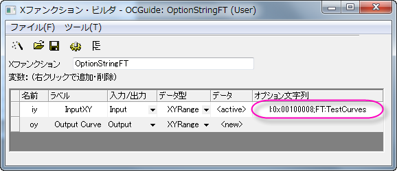
// XYRange出力のためのデータを置く vector vx, vy; vx.Data(1, 10, 1); vy = vx; oy.SetData(&vy, &vx); // 指定された名前はオプション文字列 "FT" と同じである必要がある tag_columns_in_data_range(oy, "TestCurves"); // ソース範囲グラフ取得、グラフに結果をプロット vector<uint> vnIDs; if( iy.GetPlots(vnIDs) > 0 ) { DataPlot dp; dp = (DataPlot)Project.GetObject(vnIDs[0]); GraphLayer gl; dp.GetParent(gl); gl.AddPlot(oy); }
OptionStringFT -d; を実行し、OKボタンをクリックしてソースワークシートに出力XY列を生成し、そのプロットをソースグラフに追加します。
OptionStringFT -d; を再度実行し、Xファンクションダイアログを開きます。入力XYブランチには、このデータプロットのタグ名がTestCurvesであるため、上から新たに出力されたデータプロットは表示されません。
FV:varname はそれぞれの出力変数のための入力変数の名前を指定します。この変数のブック/シート/オブジェクトの情報はトレースされ、出力変数が<input>/<same>で設定されたときに出力変数と共有されます。例えば、あるXファンクションが3つのXYRange変数を含んでいるとし、最初の2つは入力変数であり、最後の1つは出力変数とします。このオプション文字列で出力変数に入力変数の名前を設定した場合、出力が<input>または<same>に設定された場合、出力列は指定された入力列と同じになります。それ以外の場合、出力列は最初の入力列と同じになります。
Xファンクションダイアログで関連変数をグループ化するために使用されます。グループの先頭の変数のオプション文字列フィールドにG:Group Nameを追加し、 グループの末尾の変数のオプション文字列フィールドにGを追加します。
G:Group
グループの始まり。デフォルトでは、グループのブランチは閉じています。最初からこのブランチを開いた状態にするには、ダイアログを開き、グループ名の前にG:-Group Name のような - を追加します。ダイアログは次回開かれたときにブランチの状態を記憶します。
G
グループの終わり。
例
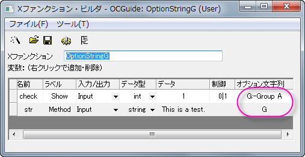
OptionStringG -d; を実行します。 次のようなダイアログが開きます。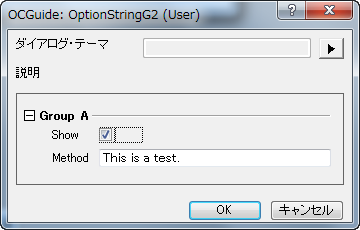
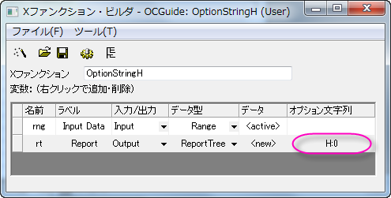
#include <ReportTree.h>
// Data Rangeオブジェクトからデータを取得 matrix mData; if( rng.GetData(mData) <= 0 ) { XF_THROW("No data is selected"); } // 各列の基本統計量を計算 vector vPoints, vSum, vSD; for(int index = 0; index < mData.GetNumCols(); index++) { vector vData; mData.GetColumn(vData, index); int nPoints; double dSum, dSD; ocmath_basic_summary_stats(vData.GetSize(), vData, &nPoints, &dSum, &dSD); vPoints.Add(nPoints); vSum.Add(dSum); vSD.Add(dSD); } // データ表を作成 int nID = 0; // IDは固有である必要がある ReportTable rTable = rt.CreateTable("Report", "Report Table", ++nID, 0, 1); rTable.AddColumn(vPoints, "N", ++nID, "Points", OKDATAOBJ_DESIGNATION_Y); rTable.AddColumn(vSum, "Sum", ++nID, "Sum", OKDATAOBJ_DESIGNATION_Y); rTable.AddColumn(vSD, "SD", ++nID, "SD", OKDATAOBJ_DESIGNATION_Y); // どのフォーマットも指定しないように属性を0とする // テーブルの表示形式を設定するために、多くのビット GETNBRANCH_*がoc_const.h に定義されている rTable.SetAttribute(TREE_Table, GETNBRANCH_TRANSPOSE);
OptionStringH -d; を実行し、ダイアログを開きます。ダイアログで、すべての列が入力データに選択され、レポートに<new>が選択されていることを確認します。OKボタンをクリックすると、レポートシートが通常の形式（H:0）で表示されます。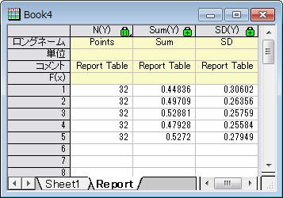
OptionStringH -d; を実行します。今回は、レポートシートが階層テーブル形式（H:1）で表示されます。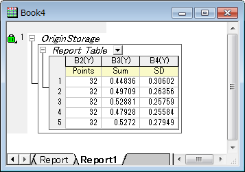
入力データ範囲を制限し、インタラクティブコントロールの動作を変更します。このオプション文字列は、Range、XYRange、XYRangeComplex、XYZRange、VECTOR、VECTOR <string>、およびVECTOR <complex>の入力データ型に対してのみ機能します。
第1サブレンジの複数データ選択を許可します。
第2サブレンジの複数データ選択を許可します。
第3サブレンジの複数データ選択を許可します。
すべてのサブレンジの複数データ選択を許可します。
1つのデータセットに限定します。
Yエラーをサポートします（XYRangeのみ）。
Range内でラベルエリアをサポートします。このオプション文字列を使用すると、出力範囲は実行前にデータを消去しません。これはI:0x00040000と同様です。
出力変数のポップアップメニューに<input>オプションが表示されなくなります。
出力変数のポップアップメニューに<new>オプションが表示されなくなります。
出力変数のポップアップリストから(<input>,<new>)オプションがなくなります。XYRangeのみ。
ポップアップメニューのボタンを削除します。
インタラクティブボタンを削除します。
ベクトル型と列型の入力変数にのみ有効です。データ選択用の文字列を取得すると、列はインデックスで識別されますが、列のショートネームは識別されません。
このオプション文字列は、初期化中にベクトル変数がY列のみを使用するようにします。
列ブラウザボタンを表示します。
変数を読み取り専用に設定します。I:0x0400とI:0x0800の両方が一緒に動作します。
初期化中またはインタラクティブな瞬間に行の選択を取り除きます。変数型：Column, Range, XYRange
シート全体の範囲文字列を列表記に置き換えます。たとえば、Book1内のワークシートSheet1に2つの列が含まれている場合、範囲文字列[Book1]Sheet1は[Book1]Sheet1!1:2に置き換えられます。
このオプション文字列は、実行を終了する前に出力範囲のデータを消去しないようにします。このオプション文字列を指定しないと、入力データ範囲に重複がない場合、出力範囲の列は新しいデータを使用する前にクリアされます。
例
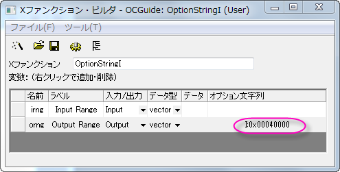
orng = irng;
OptionStringI -d; を実行し、列Aを入力、列Bを出力として選択し、OKボタンをクリックします。その結果、列Bにも行番号が入ります。
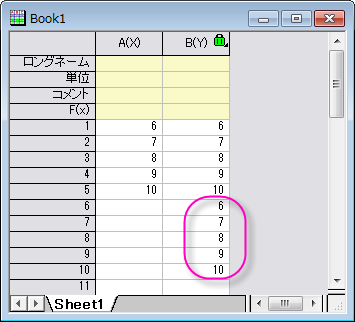
全ての列を対話型のポップアップメニューで非表示にします。
アクティブなグラフレイヤに選択がなく、<active>を使用して範囲変数が設定されている場合、範囲変数はアクティブレイヤのすべてのプロットに設定されます。
サンプリング間隔を出力Xとして使用します。
全ての列を対話型のポップアップメニューで非表示にします。
出力XYRangeが<auto>を使用して設定されている場合、このオプションは新しいX列を作成します。
行範囲は無視され、単一のブロック範囲のみが有効です。選択範囲がない場合、または選択範囲に1つのセルしか含まれていない場合、選択範囲はワークシート全体と見なされます。
インデックスの代わりに最初と最後のX値を使用して範囲文字列を作成します。構文は [BookName]SheetName!ColName[xFirstValue:LastValue] となります。単調なデータに対して非常に有用です。
Range変数には係数も重みも持ちません。
M:m-n
文字列変数が複数行テキストをサポートするようにします。文字列変数が非表示の場合、m行のテキストがサポートされ、展開した場合、n行がサポートされます。編集コントロールの右下隅でサイズを変更するには、行範囲文字列に*を追加します。
出力オブジェクトのデフォルト名を指定します。
N: Book:="Book Name" Sheet:="Sheet Name"
N: Book:="Book Name" Sheet:="Sheet Name" X:="Object Name"
N: "Name"
N: X:="X Name" Y:="Y Name"
N: X:="X Name" Y:="Y Name" Z:="Z Name"
N: Book:="Book Name" Sheet:="Sheet Name"
バージョン2021b以降、Originは出力名の置換表記をサポートしています（例：N:"Stats of %W"）。変数は、User Files\Origin.iniの[OutputLongName]セクションに次のように記載されています。
例
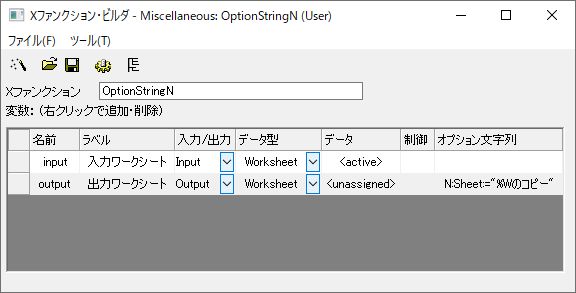
input.CopyTo(output, 0, -1, 0, -1, 0); を入力し、コンパイルボタンをクリックします。
OptionStringN -d; を実行します。ダイアログが開いたら、入力ワークシートとしてワークシートを選択し、OKボタンをクリックすると、結果が「[入力ワークシート名]のコピー」という名前の新しいワークシートに生成されます。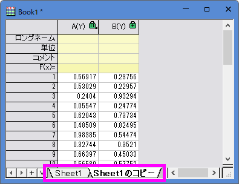
正常に実行された後の出力変数のアクションを指定します。
オブジェクトが非表示になっているか、別のフォルダーにあるかに関係なく、対応するOriginオブジェクトをアクティブ化します。
ワークブックがアクティブウィンドウの場合にのみ、対応するOriginオブジェクトをアクティブ化します。
対応するOriginオブジェクトをアクティブ化しません。
変数がXファンクションダイアログで編集可能であるかどうかを指定します。
P:1はデフォルトのオプション文字列です。このオプション文字列を使用すると、出力変数はOriginオブジェクト型(例えばColumn、Worksheetなど)であり、パラメータの変更を介してXファンクションダイアログを再び表示するときに編集できなくなります。他の型を持つ変数は、オプション文字列をP:0として指定する必要があります。
ラベルのみが表示され、編集可能フィールドは非表示です。通常はヒントテキストを表示するために使用されます。
変数を区切り文字としてXファンクションダイアログに表示します。文字列型に対してのみ有効です。
例
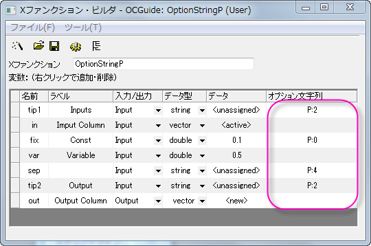
out = in + var; を入力し、コンパイルボタンをクリックします。OptionStringP -d; を実行します。開いたダイアログで、列Aを入力列として選択し、列Bを出力列として選択します。OKボタンをクリックすると、結果が生成され、列Bに格納されます。
OptionStringP -d; によって開かれたダイアログの違いを以下の図に示します。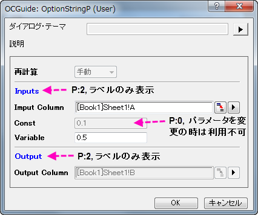
LabTalkスクリプトを介して呼び出すときに、Xファンクションのコンボボックスの値を制御するために使用されます。ダイアログには影響しません。
制約はありません。コンボボックス内のリストで定義されている値の他に、LabTalkスクリプトを使用してコンボボックス変数に他の値を代入することもできます。
デフォルトのオプション文字列。LabTalkスクリプトを使用してコンボボックス変数に代入できるのは、コンボボックス内のリストで定義されている値のみです。
例
OptionStringR x1:=5; を実行すると、次のエラーが表示されます：#Command Error!OptionStringR x1:=5; を再度実行すると、エラーは発生しません。入力変数のデフォルトデータオブジェクトを定義します。このオプション文字列はRange型の変数のみに使用されます。
アクティブなワークシートのすべての列がデータ範囲として選択されています。
アクティブな行列シートの最初の行列オブジェクト、またはアクティブなワークシートの最初の列がデータ範囲として選択されています。
<active>オプションが行列オブジェクトのみを取得するようにします。出力変数の場合、<active>オプションは<new>に置き換えられ、行列ページが作成されます。
コンボボックス内の項目値を特殊な値に置き換えます。例えば、int型の変数がControl列のBegin|Mid|End文字列を介してコンボボックスとして設定されている場合、コンボボックス項目のデフォルトの項目値は、それぞれ0、1、2です。オプション文字列 SV:1|5|-1をこの変数に使用した場合、コンボボックス内のアイテムの戻り値はそれぞれ1、5、-1です。
変数をXファンクションダイアログテーマファイルに記憶するかどうかを制御します。このオプション文字列は、デフォルト設定であるツリービューでテーマを選択する場合にのみ有効です。
指定したテーマが選択されている場合は、そのテーマの値が変数値として使用されます。
テーマが選択されている場合でも、テーマの値を変数値として使用しません。
指定されたテーマが選択されている場合、テーマの値と属性の両方が変数によって使用されます。このオプションは、主にXYRange、ImageなどのOrigin内部オブジェクトで使用されます。
出力変数が必要かどうかを指定します。このオプション文字列は、複数の出力変数を持つXファンクションに対してのみ利用可能です。
出力変数が選択されたチェックボックスを追加します。これはデフォルトのオプションです。
出力変数が未選択のチェックボックスを追加します。
出力変数のチェックボックスを追加しません。
例
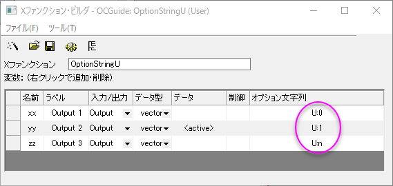
vector vv; vv.Data(1,10,1); if( xx ) // xx変数を出力するかチェック { xx = vv; } if( yy ) // yy変数を出力するかチェック { yy = vv; } zz = vv;
foreach(TreeNode subnode in trGetN.Children) { string strVarName = subnode.tagName; int nUStatus, nOutput; // 出力変数かチェック if((subnode.GetAttribute(STR_XF_VAR_IO_ATTRIB, nOutput) && IO_OUTPUT == nOutput)) { // 出力チェックボックスステータスをチェック if(subnode.GetAttribute(STR_ATTRIB_DYNACONTROL_USE_CHECK, nUStatus)) { switch(nUStatus) { case 1: printf("%s variable has Output checked check box.\n" , strVarName); break; case 0: printf("%s variable has Output unchecked check box.\n" , strVarName); break; } } else { printf("%s variable NOT Output check box.\n", strVarName); } } }
OptionStringU -d; を実行し、ダイアログの設定はデフォルトのままでOKボタンをクリックします。 これにより、2列の新しいワークシートが作成され、各出力変数のチェックボックスステータスがコマンドウィンドウに表示されます。
変数をXファンクションダイアログに表示するかどうかを指定します。
変数はダイアログに表示されません。
変数がダイアログに表示されます。
LabTalkスクリプトを使用すると、変数は非表示になります。
入力変数の横にチェックボックスを追加して、編集可能かどうかを指定します。構文は次の通りです。Z:State|Label|Behavior
例
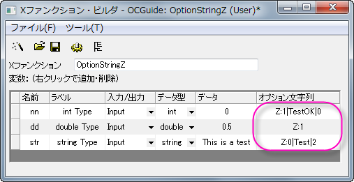
TreeNode trInt = trGetN.nn; int nAutoType = octree_get_auto_support(&trInt); switch(nAutoType) { case -1: out_str("Auto check box of int Type control is unchecked"); break; case 0: out_str("No auto check box for int Type control"); break; case 1: out_str("Auto check box of int Type control is checked"); break; }
OptionString -d; を実行すると、下の画像のようなダイアログが開きます。TestOKチェックボックスの状態を変更すると、このチェックボックスの状態に関するメッセージがコマンドウィンドウに出力されます。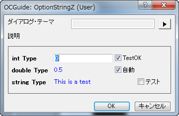